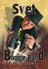
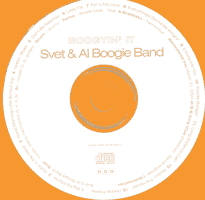
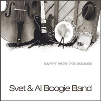

30.11.2006 Сольный концерт Svet
Boogie Band в минском клубе Гудвин. Начало в 20.00
Приглашаем посетить незабываемое шоу Svet Boogie Band
при участии Павла Аракеляна!
Павел Аракелян - ведущий джазовый саксофонист Беларуси.
Участник различных джазовых составов. Павел участвовал
в записи альбома "Nothung But Love",
гармонично добавив тонкий аромат джаза. Живые выступления
с его участием становятся ярким и запоминающимся. Яркое
шоу Svet Boogie Band с его участием станет просто фантастическим
и незабываемым!
Если вы давно не были на концерте Svet Boogie Band или
недавно посещали выступления, Вам обязательно стоит это
увидеть.
Два часа безкомпромисного блюза от Svet Boogie Band и
Павла Аракеляна!
Цена билета 20000
Справки по тел:
|

Svet Boogie Band одержали победу в финале
национального отборочного тура Global Battle Of The
Bands. Теперь группу ждет более серьезное испытание.
Мы будем представлять Беларусь на международном финале
конкурса, который пройдет 10 декабря в Лондоне.
Подробности на сайте фестиваля: www.gbob.com
|

Svet Boogie Band принимает участие в первом фестивале
«МИНСК БЛЮЗ 2006».
Фестиваль обещает быть настоящим праздником блюза. В
программе будут показаны различные направления блюза:
от архаики до электрического, чикагского и современного
блюза. И конечно же великолепное шоу от неподражаемого
Света!
Участники: Bowling Jack(Минск), Old Shoes Band (Гомель),
Danny&Willie Blues Mob (Минск), Сергей Курек и Night
Drive Band (Гомель), Артемий Кричевский(Минск). Хэдлайнер
фестиваля - Svet Boogie Band.
Фестиваль проходит 6 октября в клубе «Аквариум»
(ул. Кульман, 14), начало в 18:00.
Цена билета: 15 000 Заказ по тел: 762-74-49 (Дмитрий),
607-74-75 (Ярослав).
|
ВНИМАНИЕ!!! Фестиваль перенесен на 12 октября!!!!
Начало в 20.00
Svet Boogie Band участвуют в конкурсе "The
Global Battle of the Bands" в Беларуси.
Это национальный отборочный конкурс международного
фестиваля, финал которого пройдет 10 декабря в Лондоне.
Участвуют группы, представители различных музыкальных
направлений.
Подробнее о конкурсе: www.gbob.com
2 этап конкурса пройдет 12 октября в столичном клубе
"Гудвин". Начало в 20.00
Приглашаем всех желающих. Вход свободный. Заказ столиков
по тел. 226-13-06
|
|
7 июля Svet Boogie Band участвуют
в масштабном фестивале "Седьмое чувство".
Фестиваль организован табачным брэндом Mild Seven. В
программе также концерты мэтров английской электронной
Banco de Gaia и Hybrid, а также выступления
группы Би-2 и других музыкантов. Во время фестиваля
публике будет представлен болид F1 команды Mild Seven
Renault, лазерное шоу, а по окончании - фейерверк.
Фестиваль проходит в Национальном выстовочном центре
"БелЭкспо" На пересечении пр. Победителей
и ул. Орловской.
Начало в 20.30. Выступление Svet Boogie Band
в 22.00
|
|
24 июня (суббота) смотрите концерт
и интервью Svet Boogie Band в программе "Живой
Звук" телеканала "ЛАД" Белорусского
Национального телевидения
Начало передачи в 22.05.
|
3 июня, Москва, усадьба "Архангельское"
Svet Boogie Band участвуют в крупнейшем и самом
модном фестивале джаза в России - "Усадьба.
Джаз".
 «Усадьба.
Джаз» — фестиваль, завоевавший сразу и без лишних
слов особое место в российской музыкальной жизни.
Здесь ждут самое новое, самое интересное, и в то же
время самое запоминающееся из мира музыки. Радостное
время премьер, эксклюзивных проектов, блестящей традиции
и хорошего настроения на трёх концептуальных площадках:
многогранность «Партера», изысканная строгость «Аристократа»,
бесшабашность «Каприза» и легкая расслабляющая атмосфера
«Лаунж-кафе» никого не оставят равнодушным. «Усадьба.
Джаз» — фестиваль, завоевавший сразу и без лишних
слов особое место в российской музыкальной жизни.
Здесь ждут самое новое, самое интересное, и в то же
время самое запоминающееся из мира музыки. Радостное
время премьер, эксклюзивных проектов, блестящей традиции
и хорошего настроения на трёх концептуальных площадках:
многогранность «Партера», изысканная строгость «Аристократа»,
бесшабашность «Каприза» и легкая расслабляющая атмосфера
«Лаунж-кафе» никого не оставят равнодушным.
Svet Boogie Band ждут Вас на площадке
"Каприз" в 19.30
|
 27
апреля, клуб ГУДВИН (Минск) 27
апреля, клуб ГУДВИН (Минск)
Большой блюзовый концерт с участием самых ярких блюзовых
групп Беларуси и России
Svet Boogie Band (Минск) и Blackmailers
(Владимир, Россия).
2,5 часа отборного блюза: зажигательное и романтичное
шоу от неподражаемого Света и балканско-цыганский блюз
от колоритных Blackmailers.
Будет очень ВЕСЕЛО!
Вход 20.000 Br
Информация: ,
|
Svet Boogie Band встречают весну
в Минске!
1.03.06 (среда) клуб-ресторан "Гудвин"
(пр. Независимости ,19)
Инфор  мация
и заказ билетов по телефонам: 6261303, 2261306
Начало концерта в 20.00
|
24.02.06 Svet Boogie Band на Фестивале Пустые
Холмы Блюз в клубе Гоголь.
Специальный гость фестиваля - Кейт Дан (Keith
Dunn) - американский харпер и певец, принадлежащий
к молодому поколению блюзовых исполнителей (ему только
50)
В фестивале также принимают участие лучшие блюзовые
группы Москвы: Mishouris Blues Band, Др. Аграновский
и «Черный Хлеб»,свинго-джазо-блюзовая команда с восхитительным
характером - 26 Герц.
Подробнее о фестивале и участниках читайте на сайте
агенства Пустые
Холмы.
|
15.02.06 Музыка Svet Boogie
Band теперь в Вашем мобильном телефоне!
Качайте и устанавливайте полифоническую мелодию Miriam
Boogie в формате midi здесь.
Вы можете закачать ее в Ваш телефон при помощи data-кабеля,
инфракрасного или bluetooth порта (следуйте указаниям
в инструкции к Вашему телефону).
|
|
Диск Nothing But Love
уже в продаже!
Приобрести новый диск Svet Boogie Band можно
в магазине Видео-Невидео (пл. Независимости,
переход напротив выхода из метро).
|
16.01.06 Сообщество
Svet Boogie Band открылось в системе блогов
Live Journal. На страницах Живого журнала теперь
можно общаться с музыкантами и любителями блюза и буги-вуги.
Пользователи ЖЖ могут присоедениться к коммьюнити, перейдя
по этой
ссылке.
|
23.12.05
Белорусская газета "Наша нiва" в номере от
23 декабря называет наиболее интересные альбомы уходящего
года. Список составлен не по результатам продаж, а по
опросам музыкальных критиков, журналистов и одного директора
музыкального издательства. В категории "Альбом
года" в тройке лучших назван альбом Svet Boogie
Band "Nothing But Love". Подробнее см.
здесь.
|
 25-27.11.05 25-27.11.05
в киевском клубе 44 состоялся III Детский
джазовый фестиваль Атлант-М.
Второй год подряд весело и озорно порадовал публику
ученик Света Иван Хохлов, исполнив произведение своего
учителя "Pinetop's Shuffle". Сам Свет спел
в ранге гостя несколько песен со Stage Band фестиваля
- Александр Павлов (гитара) Андрей Арнаутов (бас) Алексей
Фантаев (drums).
Подробнее о Третьем Детском джазовом фестиваля см. на
официальном
сайте.
|
13-14.11.05 Svet Boogie
Band отправились в польский город Сувалки, где приняли
участие в фестивале джаза и госпела IV EUROREGIONALNE
SPOTKANIA GOSPEL & JAZZ.
Подробнее - на сайте
фестиваля.
|
|
 19.10.05 Презентация альбома Nothing But Love
в Минске!
19.10.05 Презентация альбома Nothing But Love
в Минске!
Концерт состоится 19 октября в минском клубе ГУДВИН
(пр. Независимости, 16). Начало в 20.00. Цена билета
20 000 (с флаером - 15 000). Скачать
флаер.
Специальные гости Павел Аракелян (саксофон), Дмитрий
"Junior" Такопуло (гитара).
Публикации в прессе о новом диске:
Newsweek (Андрей Евдокимов),
Белгазета (Татьяна Замировская),
Интервью Света для Белгазеты.
|
 11.09.05 Вышел новый диск Svet Boogie Band
Nothing But Love. На диске можно услышать авторские
композиции Света, а также две песни Эла.
11.09.05 Вышел новый диск Svet Boogie Band
Nothing But Love. На диске можно услышать авторские
композиции Света, а также две песни Эла.
Альбом записан в Большом зале Республиканской гимназии
при Белорусской академии музыки. В записи приняли
участие Павел Аракелян (саксофоны), Дмитрий "Junior"
Такапуло (гитара), Валерий "Big Val" Прохожий
(вокал).
"Маленькая, блюз - это же и есть любовь...
Мне было очень приятно петь песни Эла. Я старался
сделать сюрприз для него. Каждая песня на диске имеет
свою историю, и мы Вам ее раскажем на наших концертах...
Большое спасибо всем, всем, всем, кто нам помог в
записи этого альбома... Мне кажется, что этот диск
для влюбленных, хе-хе-хе" - Свет про диск.
29 сентября 2005 г. состоится презентация альбома
в московском JVL Art Club.
В концерте участвуют: Al (гитара) и Андрей Цыганков
(гитара).
|
|
 4-6.08.05 Svet Boogie Band
4-6.08.05 Svet Boogie Band принимают участие
в первом Aurillac Swing Festival (Орияк, Франция).
Подробнее о программе можно прочитать на официальном
сайте фестиваля www.aurillac-swing.com
Кроме этого группа сыграет ряд клубных концертов
во Франции.
|
 3.07.05 Во владимирском Z-Club состоится
презентация нового альбома группы Blackmailers
Zlatno Zrno Blues. Диск был записан осенью
2004 года в Минске на студии Maple Tree. В записи
диска приняли участие Свет и Артемий "Big Mouse"
Кричевский.
3.07.05 Во владимирском Z-Club состоится
презентация нового альбома группы Blackmailers
Zlatno Zrno Blues. Диск был записан осенью
2004 года в Минске на студии Maple Tree. В записи
диска приняли участие Свет и Артемий "Big Mouse"
Кричевский.
Музыканты Svet Boogie Band поздравляют Blackmailers
с выходом альбома и с удовоьствием выступят для благодарной
Владимирской публики в рамках презентации CD.
|
 18.06.05 Svet Boogie Band приняли участие
в официальном открытии салона Москва Harley-Davidson.
18.06.05 Svet Boogie Band приняли участие
в официальном открытии салона Москва Harley-Davidson.
Всех пришедших на Кутузовский проспект ожидало удивителльное
шоу:
150 метров дымящегося асфальта под колесами лучших
российских мотокаскадеров.
Музыка больших парней в исполнении культовой группы
Tito & Tarantula (герои фильма "От
заката до рассвета"), а также Svet Boogie
Band, Blues Cousins, Кеды, Dos Grandes.
Телеверсию открытия смотрите в ближайшее время на
одном из российских телеканалов.
Фотографии смотрите здесь.
|
 19.05.05
19.05.05 В рамках фестиваля Ural Blues Fest
группа Svet Boogie Band выступили в боулинг-центре
Универсал в г. Магнитогорск (Россия).
Группа сердечно благодарит организаторов фестиваля и
замечательную публику Магнитогорска! Фотографии смотрите
здесь.
|
 24.03-2.04.05
Ученик Света Иван Хохлов принял участие во 2 детском
джазовом фестивале АтлантМ, который проходил в Киеве
25-27 ноября 2004 года. Единственный иностранный участник
фестиваля исполнил любимую поклонниками Svet Boogie
Band песню Big Fat Mama (послушать
запись с фестиваля). 24.03-2.04.05
Ученик Света Иван Хохлов принял участие во 2 детском
джазовом фестивале АтлантМ, который проходил в Киеве
25-27 ноября 2004 года. Единственный иностранный участник
фестиваля исполнил любимую поклонниками Svet Boogie
Band песню Big Fat Mama (послушать
запись с фестиваля).
Вот так написано об Иване на официальном
сайте фестиваля:
" А теперь – внимание. Белорусская интервенция
- boogieman from Minsk . Иван Хохлов – зарубежный
участник Фестиваля «качнул» «44». Настоящие, без подвоха,
джазовые клавиши + вокал. Алексей Коган точно заметил,
что порой, игра Ивана напоминала знаменитых «гарлемских
щекотальщиков». «44» разрывался от аплодисментов,
неистовый восторг публики. Ваня, же, без всякой позы,
честно работал буги…а вот нам было не по себе. Супер.
Вышка! Ивану Хохлову, была предоставлена почетная
миссия вручать цветы девчонкам – исполнительницам.
Он и с этим справился безупречно. Спасибо, Ваня. «Хорошо,
что приехал». Привет Свету – педагогу, который посвятил
Ванечку в буги.
|
24.03-2.04.05 Svet Boogie Band
на гастролях в Москве. Музыканты принимают участие в
фестивале "Пустые Холмы" встречает весну...
(Клуб на Брестской). Подробнее о фестивале и участниках
здесь.
Полное расписание концертов в разделе афиша.
|
17-25.01.05 Svet Boogie Band на
гастролях в Москве. Музыканты принимают участие в Фестивале
клуба Cooltrain (Центральный дом художника). Также
на фестивале играют Вовка Кожекин и "Станция Мир"
Олег Киреев и "Экзотик Бэнд"
Свет участвует в Большом блюзовом джеме на "Заправке"
вместе с Леваном Ломидзе (Blues Cousins), Алексеем Барышевым
(Blackmailers Blues Band), Николай Арутюнов (Лига Блюза).
Полное расписание концертов в разделе афиша.
|
|
11.01.05 Svet Boogie Band участвуют
в программе Марины Тихомировой Ночь Блюза на первом
канале Белорусского радио (106,2 FM). Начало в 24.00
|
| 
05.01.05 Рады представить Вам дебютный DVD Svet
Boogie Band Live At JVL Art Club.
Фрагмент концерта можно увидеть здесь (Big
Fat Mama, DivX, 3,9 MB).
|
| 
23.12.04 Svet Boogie Band вернулись
в Минск после тура From Sea To Sea
в поддержку концетного альбома Live at JVL Art
Club. Концерты прошли в клубах на берегах Балтийского
и Азовского морей. Тур завершился концертами в лучших
блюзовых клубах Москвы. Фотографии можно посмотреть
здесь.
Тур был отмечен следующими яркими событиями:
рождением сына Тимофея у нашего контрабасиста Артема
Гаврюшина.
Темочка,
мы тебя поздравляем и очень любим!
рождением новых песен, и концертных трюков нового барабанщика
группы Кирилла Шевандо.
|

26.10.04 Новый диск Svet Boogie Band Live
at JVL Art Club. Программа записана во время концерта
в одном из лучших джазовых клубов Москвы.
Приобрести диск можно, связавшись с нами по тел:
Минск +375 29 638 30 88 (Святослав)
Москва (Владимир),
а также на концертах группы.
СКОРО!!!
Полная версия концерта на DVD!
|
 30.10.04
По приглашению Svet Boogie Band в Минске выступит
неподражаемый, виртуозный гитарист Алексей Барышев
со своей группой Blackmailers
Blues Band (Владимир, Россия) 30.10.04
По приглашению Svet Boogie Band в Минске выступит
неподражаемый, виртуозный гитарист Алексей Барышев
со своей группой Blackmailers
Blues Band (Владимир, Россия)
Концерты состоятся:
29 октября (пятница) -
BRONX (ул. Варвашени, 17/1). Начало в 22.00
30 октября (суббота) SATURDAY BLUES PARTY
в клубе ГРАФФИТИ (пер. Калинина,16)
При участии Svet Boogie Band (Минск)
Начало в 19.00
информация по тел.
Velcom 103, 105 (BRONX)
(ГРАФФИТИ)
|
 15.10.04
Песня Svet Boogie Band Little Tia, Little Tia
(Svet) вошла в сборник Российского блюза Я не увижу
Миссисипи -2. 15.10.04
Песня Svet Boogie Band Little Tia, Little Tia
(Svet) вошла в сборник Российского блюза Я не увижу
Миссисипи -2.
“ Достижения нашего блюза имеют конкретные имена.
Сегодня это Арсен Шомахов с группой "Рэгтайм"
(Нальчик), чьи работы можно считать новым словом в современном
блюзе. Молодой Владимир Демьянов со своей командой Blues
Doctors (Екатеринбург) демонстрирует великолепное чувство
истинно блюзового вокала и гитары, достойное лучших американских
образцов. Леван Ломидзе и Blues Cousins - суперпрофессионалы,
покоряющие Америку своей фантастической энергетикой. Svet
Boogie Band из Минска очень естественно демонстрируeт
исключительное чувство стиля и эмоциональность традиционного
блюза. Дуэт Братецкий - Кораблин и Dirty Dozen Юрия Каверкина
удачно вторглись на не занятое у нас ранее поле черного
дельта-блюза. Михаил Мишурис собрал в своем стильном "Оркестре"
лучших профессионалов, и его концерты - это классное шоу
с великолепным блюзово-свинговым звучанием.”
Полную статью от редакции Blues.RU читайте здесь.
|
|  29-30.07.04
Svet Boogie Band дали два концерта в лучших блюзовых
клубах Польши - Blues
Club (Gdynia) и Daily
Blues (Sopot). 29-30.07.04
Svet Boogie Band дали два концерта в лучших блюзовых
клубах Польши - Blues
Club (Gdynia) и Daily
Blues (Sopot).
Фотографии с этих концертов смотрите здесь.
12 - 14 августа группа выступает в Москве, а
на 20 августа намечено новое выступление в Польше. На
этот раз Svet Boogie Band примет замечательный "блюзовый"
городок Отвоцк (под Варшавой).
Подробное расписание концертов смотрите в разделе афиша
|
21.06.04 In My Kitchen / Happy
With the Boogie - статья известного российского журналиста
Андрея Евдокимова. Читайте в разделе пресса
или на сайте www.ej.ru
|
 06.06.04
Svet Boogie Band выступают на крупнейшем чешском блюзовом
фестивале Blues V Lese. Группа выступает вне конкурсной
программы в последний день фестиваля. В Ржэвнице (пригород
Праги) проходит уже пятый фестиваль Blues V Lese. На официальном
сайте мероприятия будет организована прямая он-лайн трансляция
выступлений. Подробности www.bluesvlese.cz 06.06.04
Svet Boogie Band выступают на крупнейшем чешском блюзовом
фестивале Blues V Lese. Группа выступает вне конкурсной
программы в последний день фестиваля. В Ржэвнице (пригород
Праги) проходит уже пятый фестиваль Blues V Lese. На официальном
сайте мероприятия будет организована прямая он-лайн трансляция
выступлений. Подробности www.bluesvlese.cz
|
3-4.06.04 Svet Boogie Band в Москве.
Концерты прошли при участии ветерана минской блюзовой
сцены, гитариста Артемия Кричевского. Подробности www.blues.ru
|
|  28.05.04
Вышел диск "Boogyin' It" с концертом Svet
& Al Boogie Band , который состоялся B.B. King
Club 21марта 2004. Boogie Band представлен в своей лучшей
форме. На диске 13 композиций, исполняемых группой во
время клубных концертов в поддержку альбома Happy With
The Boogie. Несколько трэков записаны при участии
Александра Братецкого. Свои фирменные номера (Walkin'
Blues, Good Mornin' Little School Gal) исполняет
Al, который вынужденно покинул группу на неопределенный
срок.
"Я хочу издать эту запись, потому что
это хорошая память о том, какие мы были с Элом, -
говорит Свет. - Без него все будет по-другому…Спасибо
Игорю Головачеву за то, что записал нас…Мне кажется, что
диск должен понравиться тем людям, которые были на наших
концертах в этом году".
|
 15.05.04
Состаялась традиционная вечеринка SATURDAY BLUES PARTY
в клубе ГРАФФИТИ. 15.05.04
Состаялась традиционная вечеринка SATURDAY BLUES PARTY
в клубе ГРАФФИТИ.
В целом обыкновенное зажигательное выступление имело и
неординарные моменты.
Это был первый концерт без гитариста и сооснователя группы
Эла. В новом составе группа называется Svet Boogie Band.
Новый гитарист - Артемий Кричевский (ex-SPOONFUL).
Тем не менее, Эл появился в конце концерта и исполнил
несколько квадратов в песне Shake A Hand.
Одно из самых непринужденных и расслабленных выступлений
Svet'a и его банды закончилось небольшим джэмом с начинающим
гармонистом.
Отдельного внимания заслуживает Артемий Кричевский. Его
гитара оригинально, но гармонично вписалась в классическое
звучание Svet Boogie Band. Опытный блюзмен Артемий, показал,
что у музыкантов старой закалки есть еще порох в пороховницах
:)
Оригинальным штрихом субботнего выступление была композиция
Hoorey Hoorey, давно не исполнявшаяся Светом, но горячо
любимая публикой.
|
27.04.04 TUESDAY BLUES PARTY с участием
Svet & Al Boogie Band в клубе ГРАФФИТИ
|
16-20.04.04 Состоялись концерты Svet
& Al Boogie Band в ряде клубов Москвы и Владимира
в рамках Большого фестиваля Blues.ru
Смотрите фотографии и слушайте записи, сделанные во время
мартовских гастролей группы в Москве.
    
For
You My Love
|
|
|
 31.03.04 Svet & Al Boogie Band представляет
31.03.04 Svet & Al Boogie Band представляет
Состоялись концерты неординарного московского блюзмена,
участника групп Станция Мир, Boogie Chillen, Ивана Жука
(вокал, хаммонд-орган, гитара) в сопровождении Svet &
Al Boogie Band.
Концерты состоялись:
8 апреля (четверг) с
программой RUNNIN' ON BLUES в клубе ГУДВИН
9 апреля (пятница) Клуб BRONX.
10 апреля
(суббота) интервью и живой блюз с Иваном Жуком в прямом
эфире Первого канала Белорусского радио (FM 106,2) в программе
Марины Тихомировой "Ночь Блюза"
При поддержке www.atlantm.com
|

27.03.04 в клубе Гудвин состоялся концерт-презентация
нового альбома Svet & Al Boogie Band "HAPPY
WITH THE BOOGIE".
Группа представила два часа зажигательного блюза и буги-вуги.
В конце вечера выступил специальный гость, обладатель
уникального голоса, неподражаемый блюзмен Big Val!
Фотографии с презентации смотрите здесь
Благодарим сайт международного автомобильного холдинга
АТЛАНТ-М www.atlantm.com
за информационную поддержку
| |
02.03.04 Записан новый альбом Svet
& Al Boogie Band Happy With The Boogie.

Концерты в поддержку диска прошли в ряде клубов Москвы
16 - 21 марта. В выступлениях приняли участие известные
российские блюзмены Алексей Барышев (Blackmailers Blues
Band), Александр Братецкий, Владимир Демьянов (Blues Doctors),
Владимир Кожекин и Иван Жук (Станция Мир).
Скоро на сайте - фотографии и записи с концертов в московских
клубах.
Информационная поддержка российского тура - портал Блюз
в России
| |
28.02.04 (суббота) в клубе ГРАФФИТИ
прошла очередная SATURDAY BLUES PARTY. В этот раз гостем
Svet & Al Boogie Band был гитарист Артемий Кричевский,
лидер известной ранее минской блюзовой группы Spoonfull.
    
| |
28.02.2004 Послушайте записи Алексея
Барышева и Svet & Al Boogie Band в прямом эфире программы
Марины Тихомировой "Ночь Блюза" на Первом канале
Белорусского радио (FM 106,2), которая состоялась 31.01.2004.
Murmur
Low
Lovin'
You
Let
Me Show You
| |
 31.01
- 1.02.04 Svet & Al представляет 31.01
- 1.02.04 Svet & Al представляет
концерты отличного блюзового гитариста Алексея Барышева,
лидера The
Blackmailers Blues Band (Владимир, Россия). В Минске
Алексей Барышев будет выступать в сопровождении Svet &
Al Boogie Band. Концерты состоятся:
31 января
(суббота), клуб ГРАФФИТИ (пер. Калинина, 16) SATURDAY
BLUES PARTY. Начало в 19.00. Информация по тел..
31 января в прямом эфире Первого канала Белорусского
радио (FM 106,2) в программе Марины Тихомировой "Ночь
Блюза" Начало в 24.00
1 февраля (воскресенье)
клуб ГУДВИН (пр.Ф.Скорины, 19) Алексей Барышев и Svet
& Al Boogie Band представляют программу THE BLUES NEVER
DIE! Начало концерта в 20.00. Тел. 2261306, .
Фотографии с концертов смотри здесь
| |
24.01.2004 Cостаялся рассказ о творчестве
Алексея Барышева в программе Марины Тихомировой "Ночь
Блюза" на Первом канале Белорусского радио (FM 106,2).
| |
17 января 2004 Свет и Артем Гаврюшин
участвуют в программе Марины Тихомировой "Музычны партал"
на Первом канале белорусского радио (FM 106,2), в которой
расскажут о предстоящих концертах с Алексеем Барышевым.
В программе прозвучат записи The Blackmailers Blues Band,
а также несколько композиций из готовящегося к выходу
альбома Svet & Al Boogie Band.
Начало программы в 22.30
|
12.01.04 На сайте появилась статья
Максима Иващенко "Christmas Blues
Party в клубе «Граффити»" о выступлении Svet &
Al Boogie Band i Proud Mary в столичном клубе ГРАФФИТИ.
Отзыв о концерте был опубликован на сайте www.tochka.by
Болшое спасибо автору.
|
  21.12.03
По приглашению Svet & Al в минских клубах Граффити
и Гудвин прошли концерты уникального акустического дуэта
Proud
Mary из Лодзи (Польша). Каролина Кориат (Karolina
Koriat) - вокал, и Александра Семенюк (Aleksandra Siemieniuk)
- акустическая гитара, добро показали в Минске потрясающее
исполнение традиционного блюза 20 - 30 годов ХХ века.
Удивительный голос вокалистки в сочетании с виртуозной
гитарой создали по-настоящему волшебную атмосферу в клубах.
Вместе с гостями выступили и хозяева Svet & Al Boogie
Band, представившие акустическую программу в Гудвине и
буги-вуги в Граффити. 21.12.03
По приглашению Svet & Al в минских клубах Граффити
и Гудвин прошли концерты уникального акустического дуэта
Proud
Mary из Лодзи (Польша). Каролина Кориат (Karolina
Koriat) - вокал, и Александра Семенюк (Aleksandra Siemieniuk)
- акустическая гитара, добро показали в Минске потрясающее
исполнение традиционного блюза 20 - 30 годов ХХ века.
Удивительный голос вокалистки в сочетании с виртуозной
гитарой создали по-настоящему волшебную атмосферу в клубах.
Вместе с гостями выступили и хозяева Svet & Al Boogie
Band, представившие акустическую программу в Гудвине и
буги-вуги в Граффити.
Кроме клубных концертов состоялся концерт Proud Mary в
прямом эфире Первого канала Белорусского радио (FM 106,2)
в программе Марины Тихомировой "Ночь блюза".
Фотографии с минских концертов польского дуэта Proud Mary
смотрите здесь
Скоро на сайте можно будет послушать записи концерта на
радио.
|
29.11.03 Big Val, Svet & Al приняли
участие в фестивале гитаристов "Грифомания" в ДК МТЗ.
|
 08.11.03
Big Val, Svet & Al выступали на фестивале ZADUSZKI
BLUESOWE в Белостоке (Польша). Читайте статью корреспондента
Gazety
Wyborczej о фестивале. 08.11.03
Big Val, Svet & Al выступали на фестивале ZADUSZKI
BLUESOWE в Белостоке (Польша). Читайте статью корреспондента
Gazety
Wyborczej о фестивале.
|
07.11.03 Фотоотчет о минских концертах
Korablin-Bratetsky смотрите здесь.
|
25.10.03 Svet & Al на первом канале
национального радио. 22.30 программа "Музычны
партал".Послушайте записи:
Big
Boss Man
Let
Me Show You
Long
Distance Call
Hello,
Fred
|
 20.10.03
Svet & Al представляют московский блюзовый дуэт Korablin-Bratetsky.
Владимир Кораблин(вокал, ак. гитара), Александр Братетский
(губная гармошка) в программе: 20.10.03
Svet & Al представляют московский блюзовый дуэт Korablin-Bratetsky.
Владимир Кораблин(вокал, ак. гитара), Александр Братетский
(губная гармошка) в программе:
18 октября в программе "Музычны партал" на Первом
канале Белорусского радио (FM 106,2). Начало в 22.30.
В 0.00 - живой концерт в программе "Ночь блюза" при участии
Big Val, Svet & Al
19 октября в кафе БЛЮЗ (ул. Ленина, 1) акустический концерт
Korablin-Bratetsky. Начало в 20.00.
20 октября в клубе ГУДВИН (пр. Ф.Скарыны, 19) вечер акустического
блюза с участием Korablin-Bratetsky и Big Val, Svet &
Al. Начало в 20.00.
20 октября, канал Культура (УКВ 70,43), программа
Марины Тихомировой "Золотое сечение" начало в 21.30
21 октября, клуб ГРАФФИТИ (пер.Калинина,16) концерт Korablin-Bratetsky
и Svet & Al Boogie Band.
|
19.10.03 Смотрите на сайте фотографии
с Международного фестиваля ОЧАКОВО-БЛЮЗ (Москва).
|
19.09.03 Svet & Al были на
Первом канале Белорусского радио (FM 106,2). В программе
Надежды Кудрейко "Тры аккорда" рассказали
о московском международном фестивале ОЧАКОВО-БЛЮЗ. Было
много музыки.
|
 10.09.03
04-09.09.03 Big Val, Svet & Al и Артем Гаврюшин учавствовали
в грандиозном фестивале ОЧАКОВО-БЛЮЗв Москве (Россия). 10.09.03
04-09.09.03 Big Val, Svet & Al и Артем Гаврюшин учавствовали
в грандиозном фестивале ОЧАКОВО-БЛЮЗв Москве (Россия).
6.09 Svet & Al Boogie Band открыли гала-концерт на
центральном стадионе Динамо. Начало в 17:00,
Кроме этого Big Val, Svet & Al и Артем Гаврюшин приняли
участие в клубных концертах:
4.09 ВУДСТОК джем Доктора Аграновского;
5.09 АЛАБАМА с Доктором Аграновским;
8.09 АЛАБАМА Вечер блюзовой архаики.С Юрием Каверкиным
и Wrong Way Band
9.09 - COLTRAIN JAZZ CLUB (3 этаж), Другая Музыка. Закрытие
фестиваля.
Первый Московский международный блюзовый фестиваль ОЧАКОВО-БЛЮЗ,
по замыслу организаторов, - самый большой блюзовый фестиваль
России. В нем принимают участие музыканты из России, США,
Германии, Швеции и Беларуси. Концерты пройдут в 10 московских
музыкальных клубах.Гала-концерт состоится в субботу 6
сентября на центральном стадионе ДИНАМО. Фестиваль проводится
в рамках празднования Года Блюза в России. Подробности
читайте на сайте "Блюз
в России".
|
03.08.03 Закончилась серия клубных
концертов по городам России. Выступления прошли в Z-клубе
(Владимир), B.B.KING CLUB (Москва), а так же в одном из
клубов Санкт Петербурга. Вместе со Svet & Al играли Big
Val и Артем Гаврюшин (контрабас). Спасибо всем, кто помог
в организации выступлений.
|
30.07.03 На сайте появилась запись
передачи "Музычны партал" Первого канала
Национального радио с участием Big Val, Svet & Al.
Послушать программу "On Air" можно здесь.
|
19.07.03 Состоялось выступление
Big Val,Svet & Al на дне рождения белорусского мужского
журнала "XXl век". Праздник проходил в клубе BRONX
|
05.07.03 Новые фотографии с фестиваля
в Раве Мазовецкой и последнего концерта
в клубе 4 АПЕЛЬСИНА появились в разделе "ФОТО".
Статью Дмитрия Подберезского о Фестивале можно прочитать
здесь.
|
31.05.03 Big Val, Svet &Al
заняли первое место в конкурсе на фестивале NOC BLUESOWA,
который проходил 30-31 мая в польском городе Рава Мазовецка.
На втором месте группа из Чехии HOOCHIE COOCHIE BAND,
а на третьем квартет из Франции TIA & PATIENT WOLFS.
Это уже 13 фестиваль NOC BLUESOWA в Раве Мазовецкой и
первая победа в нем белорусов. В конкурсной программе
участвовали музыканты из Польши, Чехии, Германии, Франции,
Беларуси. B качестве приглашенных гостей среди прочих
выступила белорусская группа P.L.A.N.
Спасибо всем нашим соперникам. Нам было очень приятно
играть на одной сцене с профессионалами такого высокого
класса.
|

 10.09.05
Svet Boogie Band приняли участие в большом
международном фестивале Na Skrzyzowaniu Kultur
в Варшаве (Польша). Выступление группы проходило под
лозунгом "Беларусь - страна в Европе"
10.09.05
Svet Boogie Band приняли участие в большом
международном фестивале Na Skrzyzowaniu Kultur
в Варшаве (Польша). Выступление группы проходило под
лозунгом "Беларусь - страна в Европе"